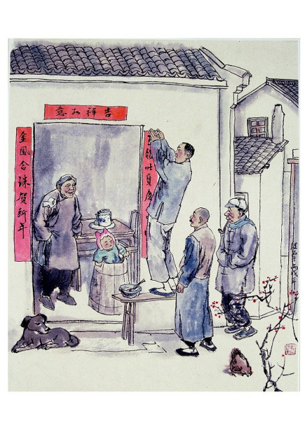

贴年红
贴年红，即是贴春联、门神、年画、福字、横批、窗花等的统称，因这些是过年时贴的红色喜庆元素，所以统称为“贴年红”。贴年红是中华传统过年习俗，它反映了人民大众的风俗和信仰，增添喜庆的节日气氛，并寄予着人们对新年新生活的美好期盼。
午夜饭
年夜饭，是年节习俗之一，又称年晚饭、团年饭、团圆饭等，特指年尾除夕的阖家聚餐。年夜饭源于古代的年终祭祀仪式，拜祭神灵与祖先后团圆聚餐。团年饭是年前的重头戏，不但丰富多彩，而且很讲究意头。吃团年饭前先拜神祭祖，待拜祭仪式完毕后才开饭。席上一般有鸡（寓意有计）、鱼（寓年年有余）、蚝豉（寓好市）、发菜（寓发财）、腐竹（寓富足）、莲藕（寓聪明）、生菜（寓生财）、生蒜（寓会计算）等以求吉利。中国人的年夜饭是家人的团圆聚餐，这顿是年尾最丰盛、最重要的一顿晚餐。
压岁钱
压岁钱（在广东叫做“俾利是”），春节习俗之一。压岁钱是由长辈派发给晚辈的，年夜饭后长辈要将事先准备好的压岁钱派发给晚辈，据说压岁钱可以压住邪祟，晚辈得到压岁钱就可以平平安安度过一岁；有的人家是父母在夜晚待子女睡熟后，放在他们的枕头下。过年给压岁钱，体现出长辈对晚辈的关切之情和真切祝福。压岁钱在民俗文化中寓意辟邪驱鬼，保佑平安。压岁钱最初的用意是镇恶驱邪，因为人们认为小孩容易受鬼祟的侵害，所以用压岁钱压祟驱邪。
|  | ||
| 贴年红 | 年夜饭 | 压岁钱 |
新春快乐